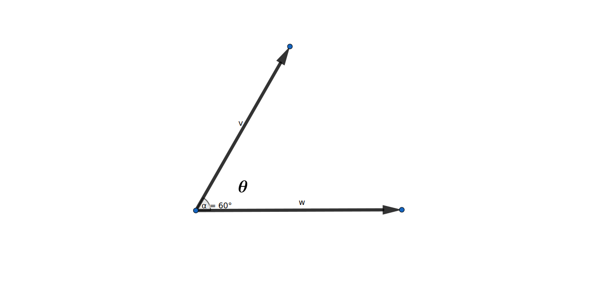

前言
本文讲解向量的数量积与向量夹角，并通过编程实现。
向量数量积
两个向量数量积（英语: Inner Products）在几何上可以表示为两向量的模长乘以两向量之间夹角的余弦值。向量数量积几何定义可以帮助我们寻找两向量之间的夹角。

$$ \overrightarrow{v} \cdot \overrightarrow{w} = \lVert \overrightarrow{v} \rVert \cdot \lVert \overrightarrow{w} \rVert \cdot \cos(\theta) $$ $$ \begin{align} \theta &= \arccos( \frac{ \overrightarrow{v} \cdot \overrightarrow{w} } { \lVert \overrightarrow{v} \rVert \cdot \lVert \overrightarrow{w} \rVert }) \\ &= \arccos( \frac{ 1 } { \lVert \overrightarrow{v} \rVert } \overrightarrow{v} \cdot \frac{ 1 } { \lVert \overrightarrow{w} \rVert } \overrightarrow{w} ) \end{align} $$图 1: 向量数量积的几何定义
向量数量积的几何定义虽然直观明了，但不好计算，我们再看看向量数量积的代数定义。
$$ \begin{align} \overrightarrow{a} \cdot \overrightarrow{b} &= \sum_{i=1}^{n}a_i \cdot b_i \\ &= a_{1} \cdot b_{1} + a_{2} \cdot b_{2} + ... + a_{n} \cdot b_{n} \end{align} $$ $$ \overrightarrow{v} \begin{bmatrix} a_{1} \\ a_{2} \\ ... \\ a_{n} \end{bmatrix} \cdot \overrightarrow{w} \begin{bmatrix} b_{1} \\ b_{2} \\ ... \\ b_{n} \end{bmatrix} = a_{1} \cdot b_{1} + a_{2} \cdot b_{2} + ... + a_{n} \cdot b_{n} $$向量数量积的代数定义可以帮助我们快速计算。
向量数量积与向量夹角的关系
我们知道，$\cos(x)$函数的值域是$[-1, 1]$。再结合向量数量积的几何定义，我们就可以得到著名的柯西-施瓦茨不等式。
$$ \overrightarrow{v} \cdot \overrightarrow{w} = \lVert \overrightarrow{v} \rVert \cdot \lVert \overrightarrow{w} \rVert \cdot \cos(\theta) , \cos(\theta) \in \lbrack -1, 1 \rbrack $$ $$ - \lVert \overrightarrow{v} \rVert \cdot \lVert \overrightarrow{w} \rVert \leq \overrightarrow{v} \cdot \overrightarrow{w} \leq \lVert \overrightarrow{v} \rVert \cdot \lVert \overrightarrow{w} \rVert \\ \Updownarrow \\ \vert \overrightarrow{v} \cdot \overrightarrow{w} \vert \leq \lVert \overrightarrow{v} \rVert \cdot \lVert \overrightarrow{w} \rVert $$接下来，我们结合向量数量积的几何定义来考虑一下向量夹角。我们设两个向量都不是零向量（数量积存在）。
$$ \overrightarrow{v} \cdot \overrightarrow{w} = \lVert \overrightarrow{v} \rVert \cdot \lVert \overrightarrow{w} \rVert \cdot \cos(\theta) \\ \cos(\theta) \in \lbrack -1, 1 \rbrack , \overrightarrow{v} \not= \overrightarrow{0} , \overrightarrow{w} \not= \overrightarrow{0} $$| 向量数量积关系 | $\boldsymbol{\cos(\theta)}$ | $\boldsymbol{\theta}$ | 向量位置关系 |
|---|---|---|---|
| $ \overrightarrow{v} \cdot \overrightarrow{w} = \lVert \overrightarrow{v} \rVert \cdot \lVert \overrightarrow{w} \rVert $ | $1$ | $0$ | 平行 |
| $ \overrightarrow{v} \cdot \overrightarrow{w} = - \lVert \overrightarrow{v} \rVert \cdot \lVert \overrightarrow{w} \rVert $ | $-1$ | $\pi$ | 相反 |
| $ \overrightarrow{v} \cdot \overrightarrow{w} = 0 $ | $0$ | $\pi \over 2$ | 垂直 |
| $ \overrightarrow{v} \cdot \overrightarrow{v} = {\lVert \overrightarrow{v} \rVert}^{2} $ | $1$ | $0$ | 相同 |
表 1: 向量数量积与向量夹角关系